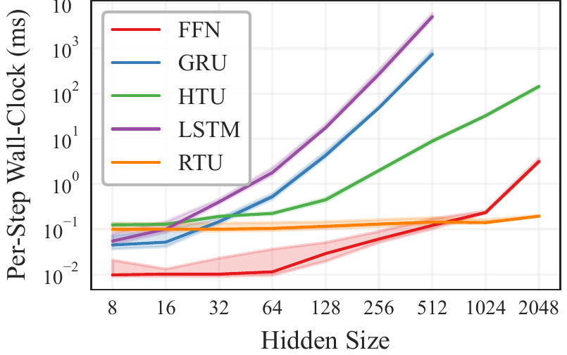
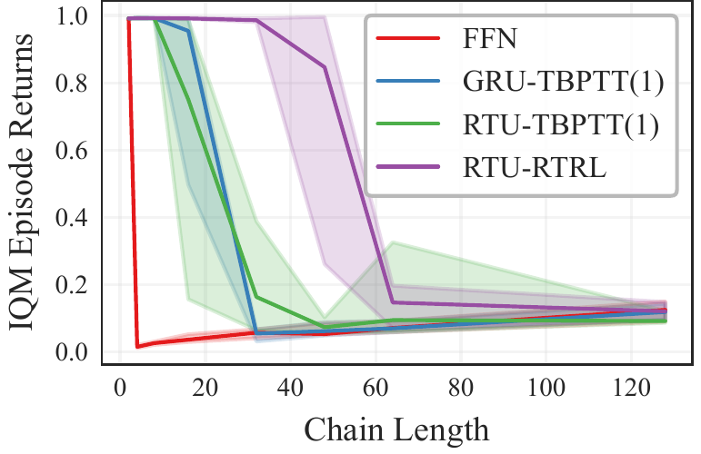

Linear-time RTRL sustains credit assignment under streaming

(a) Per-step wall-clock time (ms) of a single gradient update vs. hidden width. RTU under exact RTRL tracks feedforward backpropagation, while GRU and LSTM under RTRL exhibit the prohibitive O(n4) scaling.

(b) IQM episodic return vs. chain length on the MemoryChain diagnostic (5 seeds). RTU with RTRL holds near-maximum return where the streaming TBPTT(1) baselines (FFN, GRU, RTU) collapse past length 16.
Abstract
Streaming reinforcement learning has emerged as an online learning paradigm that conforms to the restrictions of natural learning agents that process data incrementally, i.e. with a batch size of 1 and no replay buffer. While streaming RL has recently been shown to scale with deep function approximation with full observability, partially observable settings have remained out of reach. Truncated backpropagation through time collapses to a one-step gradient horizon under the streaming setting, and exact real-time recurrent learning is prohibitively expensive. We close this gap using recurrent trace units, a diagonal recurrent architecture that enables exact RTRL with linear time and memory complexity in the parameter count, and show that they integrate cleanly into existing streaming algorithms across both discrete and continuous control. On a MemoryChain diagnostic with chain lengths from 2 to 128, our method sustains performance where streaming TBPTT(1) baselines using feedforward, GRU, and RTU networks collapse. On five POPGym tasks and on partially observable MuJoCo continuous control, the streaming approach is competitive with batched PPO on POPGym and recovers a substantial fraction of batched performance on masked MuJoCo, despite using no replay buffer or batched updates.
BibTeX
@article{farr2026streaming,
title={Streaming Reinforcement Learning under Partial Observability with Real-Time Recurrent Learning},
author={Farr, Noah and Reddi, Aryaman and D'Eramo, Carlo and Peters, Jan},
journal={arXiv preprint arXiv:2605.24709},
year={2026}
}